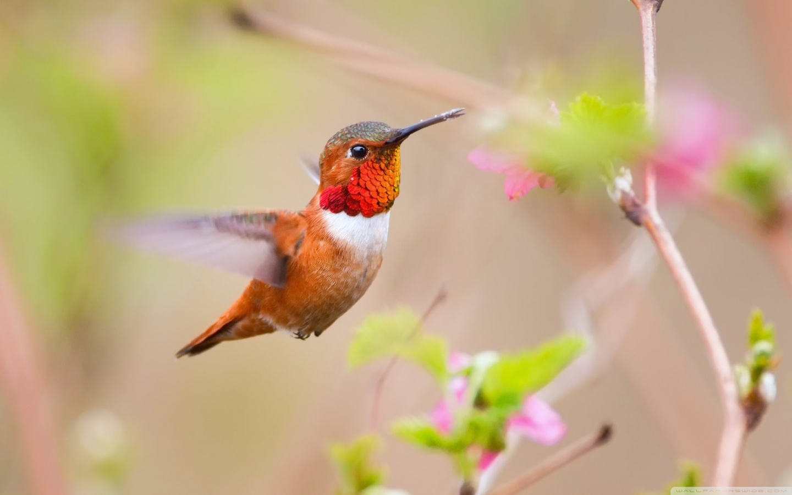
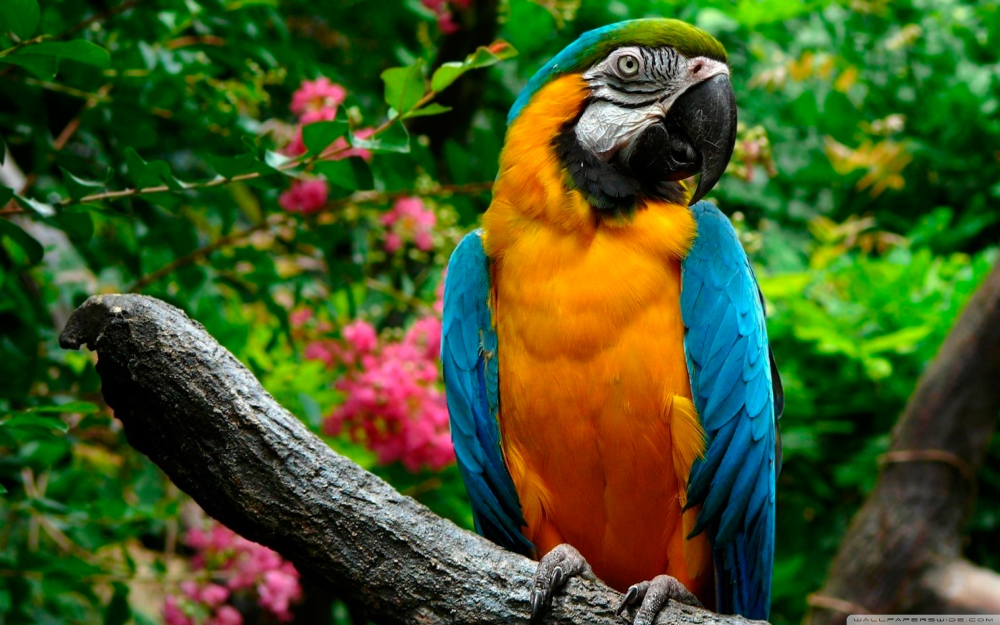

The bald eagle (Haliaeetus leucocephalus) is a bird of prey found in North America. A sea eagle, it has two known subspecies and forms a species pair with the white-tailed eagle (Haliaeetus albicilla), which occupies the same niche as the bald eagle in the Palearctic.Read more
Hummingbirds are birds native to the Americas and comprise the biological family Trochilidae. With about 361 species and 113 genera,[1] they occur from Alaska to Tierra del Fuego, but the vast majority of the species are found in the tropics. They are small birds, with most species measuring 7.5–13 cm (3–5 in) in length. The smallest extant hummingbird species is the 5 cm (2.0 in) bee hummingbird, which weighs less than 2.0 g (0.07 oz). The largest hummingbird species is the 23 cm (9.1 in) giant hummingbird, weighing 18–24 grams (0.63–0.85 oz). They are specialized for feeding on flower nectar, but all species also consume flying insects or spiders.Return to homepage
Parrots, also known as psittacines (/ˈsɪtəsaɪnz/),[1][2] are birds of the roughly 398 species[3] in 92 genera comprising the order Psittaciformes (/ˈsɪtəsɪfɔːrmiːz/), found mostly in tropical and subtropical regions. The order is subdivided into three superfamilies: the Psittacoidea ("true" parrots), the Cacatuoidea (cockatoos), and the Strigopoidea (New Zealand parrots).Read more